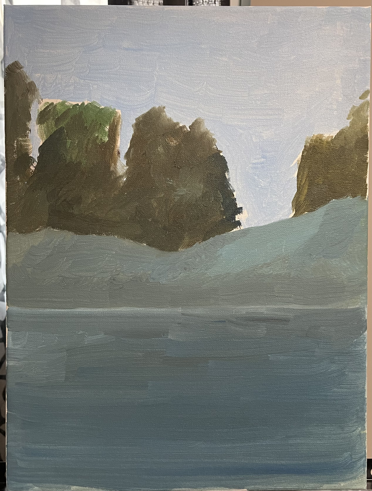

There are three main parts to making an excellent oil painting
-
Sketch and Composition
- Begin by finding a suitable reference photo online.
- Carefully observe the photo to identify the basic shapes and overall structure.
- Sketch these fundamental shapes onto your canvas.
- Apply an underpainting to establish the groundwork for your artwork.
-
Painting Techniques
- In oil painting, it's essential to apply paint from thin to thick.
- Follow the principle of layering colors from dark to light.
- Allow each layer to dry completely before applying the next.
-
Layering and Detailing
- After completing the underpainting, use a medium-sized brush to apply the mid tones.
- Once the mid tones are in place, proceed to add the light tones.
- Finally, utilize a fine brush to focus on the small details, enhancing the overall composition.
Examples
-
Underpainting
 -
Final
-
Underpainting
-
Final
-
Here are both the artworks
Other types of paint
| Feature | Oil Paint | Acrylic Paint | Watercolor Paint |
|---|---|---|---|
| Drying Time | Slow (days to weeks) | Fast (minutes to hours) | Fast (minutes) |
| Texture | Rich and thick | Varies (from thick to thin) | Thin and transparent |
| Finish | Glossy or matte | Matte or glossy | Transparent and luminous |
| Solvent | Requires solvents (e.g., turpentine) | Water-soluble | Water-soluble |
| Color Mixing | Excellent blending and mixing | Good mixing; dries quickly | Transparent washes and layering |
| Cleanup | Requires solvents | Soap and water | Soap and water |
| Best For | Detailed, realistic work | Versatile techniques | Light and fluid effects |